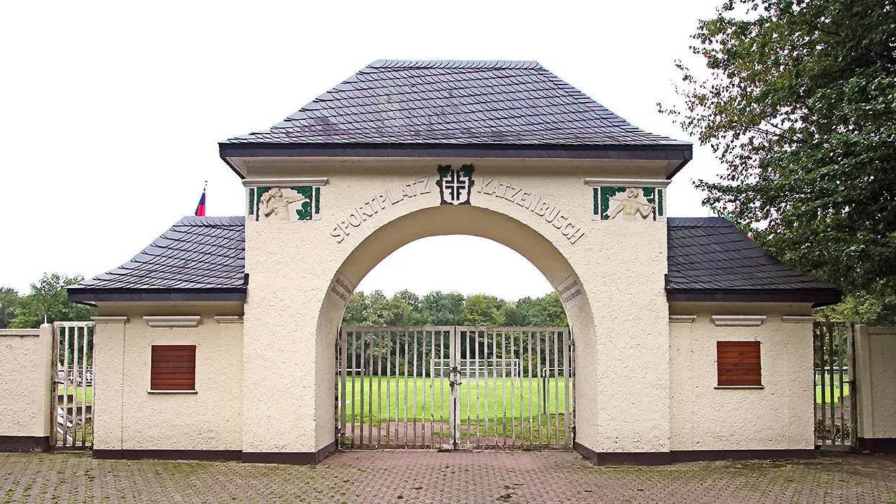
Seit 1907 am Katzenbusch.
Fußball und Turnen in Herten-Süd. Für Kinder ab 1½ Jahren bis zu den Gehfußballern Ü50.
- Gegründet
- 1907
- Jugendteams im Fußball
- 15
- Frauenteams
- 3
- Turngruppen
- 4
Mein Team
Nur auf diesem Gerät gespeichert.
Was passt zu eurem Kind?
Geburtsjahr eingeben, und ihr seht alle passenden Fußballteams und Turngruppen mit Trainingszeiten und Ansprechpartnern. Fußball ist für Jungen und Mädchen offen, dazu gibt es eigene Juniorinnen-Teams.
Trainingszeiten gelten für den Sommer, im Winter können sie abweichen. Mit dem Stern merkt sich die Seite das Team eures Kindes.
Spiele
Stand 26.11., 17:32 Uhr, Daten von fussball.de.
Als Nächstes
-
Heim
-
Auswärts
-
Heim
-
Auswärts
-
Auswärts
-
Heim
-
Heim
Zuletzt gespielt
Heute im Verein
Trainingsplan dieser Woche
Sommerzeiten, im Winter kann es Abweichungen geben.
Unsere Abteilungen
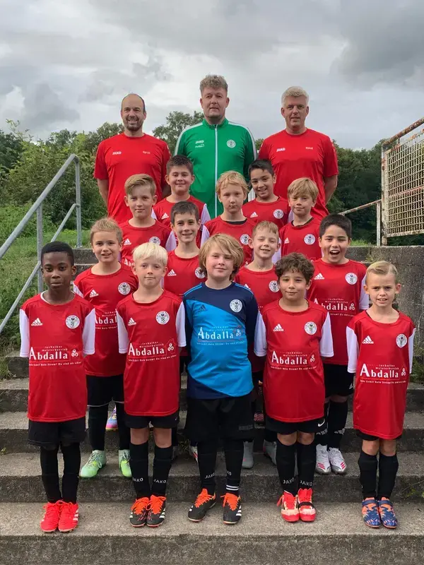
Jugend
Junioren und Juniorinnen von den Bambini bis zur B-Jugend.
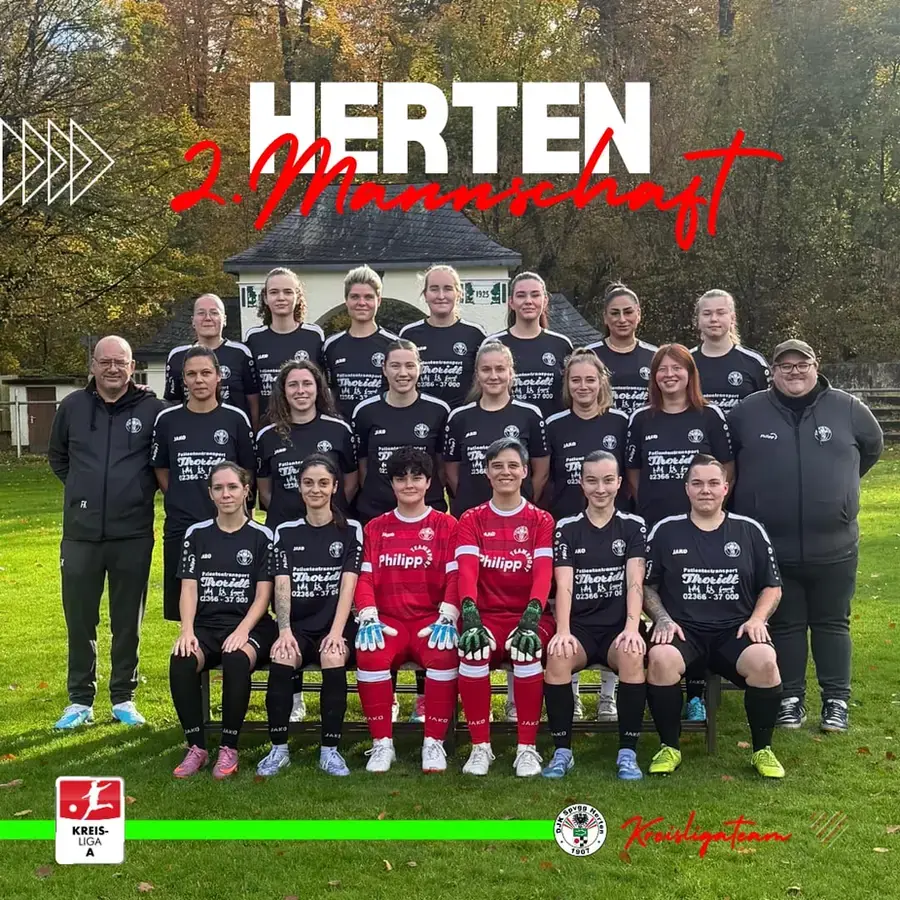
Katzenbuschladies
Drei Frauenteams, die erste spielt Landesliga.
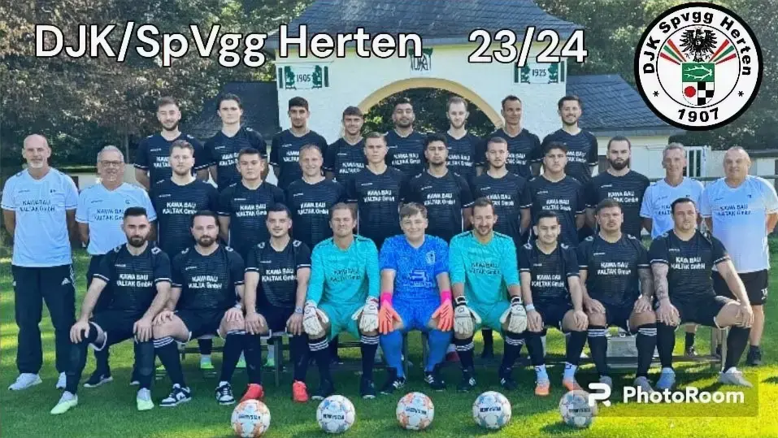
Herren & Alte Herren
Zwei Herrenteams, Ü32, Ü50 und Gehfußball.
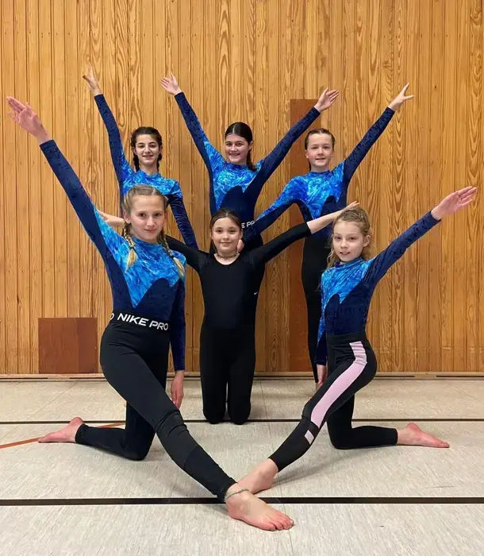
Turnen
Eltern-Kind-Turnen ab 1½ Jahren, Kinderturnen und eine Wettkampfgruppe im Gerätturnen.
Turnen bei der DJK
Vier Gruppen in zwei Hallen, von den Kleinsten mit Eltern bis zur Wettkampfgruppe im Gerätturnen.
Zur Turnabteilung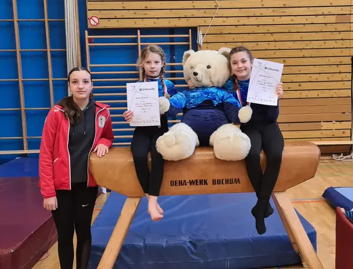
Eltern-Kind-Turnen
1½ bis 4 Jahre, mit Mama, Papa oder einer anderen Begleitperson
Mi 16:00–17:30 · Fr 16:00–17:30
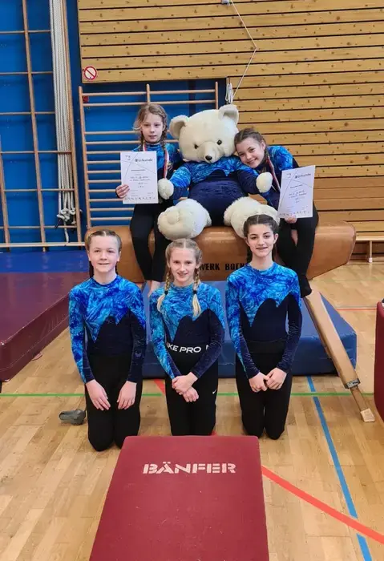
Kindergartenturnen
Kinder im Kindergartenalter
Mo 16:00–17:00
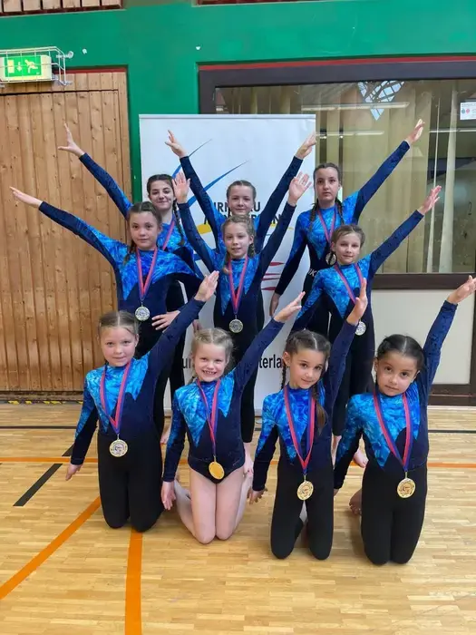
Grundschulturnen
Kinder im Grundschulalter
Mo 17:15–18:30
Wettkampfgruppe
Schulkinder und Jugendliche im Gerätturnen
Di 17:00–18:30 · Do 17:15–19:15
Neuigkeiten
Danke an unsere Sponsoren
Sponsor werden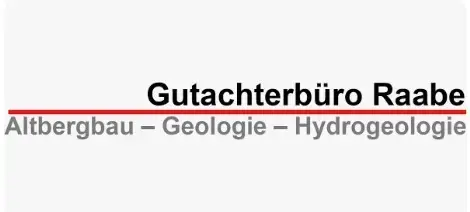
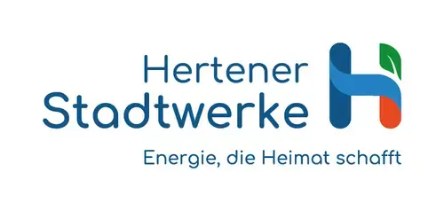
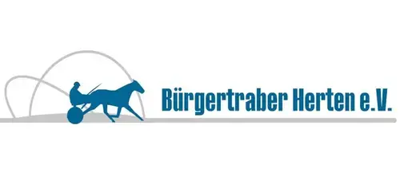